我们依旧从老生常谈的一般规律说起。外因是变化的条件，内因是变化的根据，外因通过内因而起作用——这条规律上一篇刚刚落过一次地：一个系统此刻的样子是一捆数，它接下来往哪儿走是一张表，而表里那几个数被参数彻底决定。于是"想改一个系统的脾气，就去改它的参数"这话说得理直气壮。弹簧系统里就是改质量、改弹簧系数、改阻尼：阻尼从零一点点加上去，相图从椭圆变成螺旋、再从螺旋变成两条直着回来的实方向，要什么给什么，一路顺顺当当。
这话在上一篇里说得斩钉截铁，因为它当时是对的。现在换一个系统来撞它。不拿弹簧——弹簧太听话了。拿一根棍子，立在掌心上。
棍子立起来，它就要倒。这件事人人小时候都试过，试不过三秒。可这一篇不是要研究怎么保持平衡，是要先把它那句话——改参数就改脾气——拿去撞一撞。
先照上一篇的写法把棍子写下来。它此刻的样子是两个数：歪了多少，歪得多快。上一篇里位移与速度并排放在横竖两根轴上，是一支从原点出发的箭头；这里也一样，两个数并排放，就是一支箭头。它接下来往哪儿走，还是一张表。
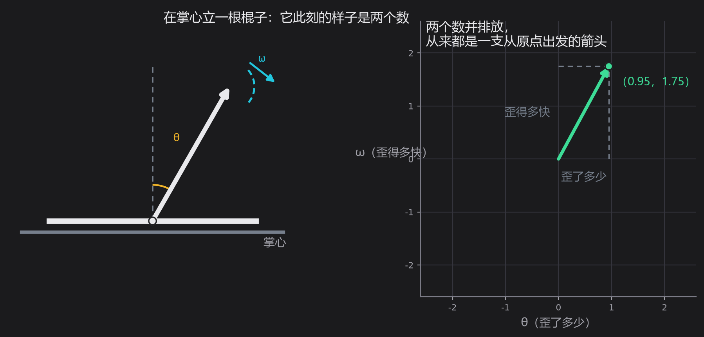
怎么读这张表的两行？第一行管"歪了多少"怎么变：歪的多少每时每刻按角速度攒起来，所以第一行写下来是 θ 的系数 0、ω 的系数 1。第二行管"歪得多快"怎么变，这里有两股劲在拔河——一股是重力，棍子歪得越多，它往外拉得越狠，这一股写成 aθ，a 就是"往外拉的劲"；棍子越长这个劲越小（a 就是重力加速度除以长度，所以越长的杆子倒得越慢），另一股是阻尼，转得越快被拖住得越厉害，写成 −cω。
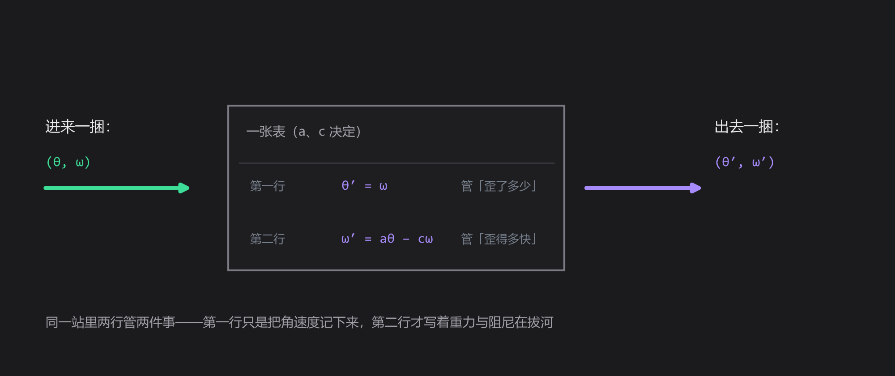
把四个数排成两行两列，就是这张表：
这一站的几个名字都可以后置：两个数并排叫状态，这样的式子叫状态方程，棍子加手的这整套东西工程上叫倒立摆，而这张表是把"只歪一点点"时的规律取了一次线性近似——名字先放着，值得看的是这四个数里藏着的两句话。
先看两个数。对角线加起来，是 −c；左右交叉相减，是 −a。上一篇第五、六站说过，这两个数是一张表的两条命根子：两个特征方向的倍数加起来等于对角线之和，乘起来等于交叉相减的那个数。写成式子就是这样：
取 a ＝ 1、c ＝ 0.2 代进去，两个倍数是 +0.90 和 −1.10。一正一负。
一正一负，就是这一站的全部。上一篇说，特征方向上的作用只是把长短变一个倍数：倍数是正的，那一捆数就沿着这条线一个劲往外长；倍数是负的，它就沿着这条线一个劲往回缩。于是棍子的相平面上有两条特殊的直线——红线上，棍子每时每刻都更歪、歪得更快；青线上，它一边歪一边慢下来，自己回到竖着的位置。
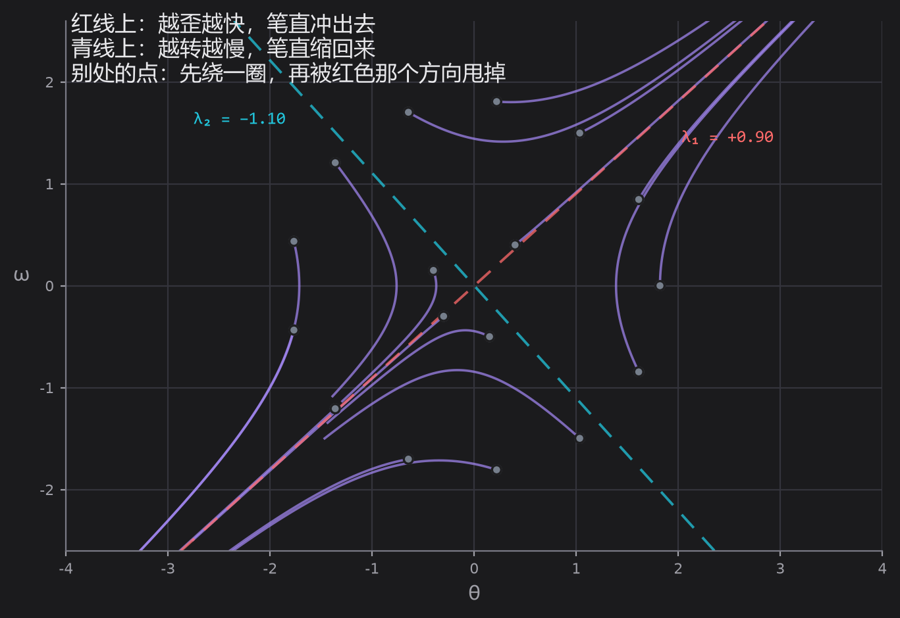
从别处出发的一捆数走的是弯线：它先绕一圈，然后被红色那个方向甩出去。只有那两条线上是直的。为什么？因为在那条线上 Av=λv，走够 t 时间就是 eλtv，方向一刻没变，变的只是长短按 λ 这个倍数长或缩。这句话在项目里能亲手验：在红线附近放一个点，它笔直地冲出去；在青线上放一个点，它笔直地缩回来；只要离开这两条线，轨迹就弯了。
拖画布上的灰点。拖到红线附近，它笔直地冲出去；拖到青线上，它笔直地缩回来；拖到别处，先绕一圈再被甩掉。滑条是阻尼 c，两个倍数当场重算。
（这一站是单文件、零依赖，双击就能单独打开。）也可直接打开 这一站。
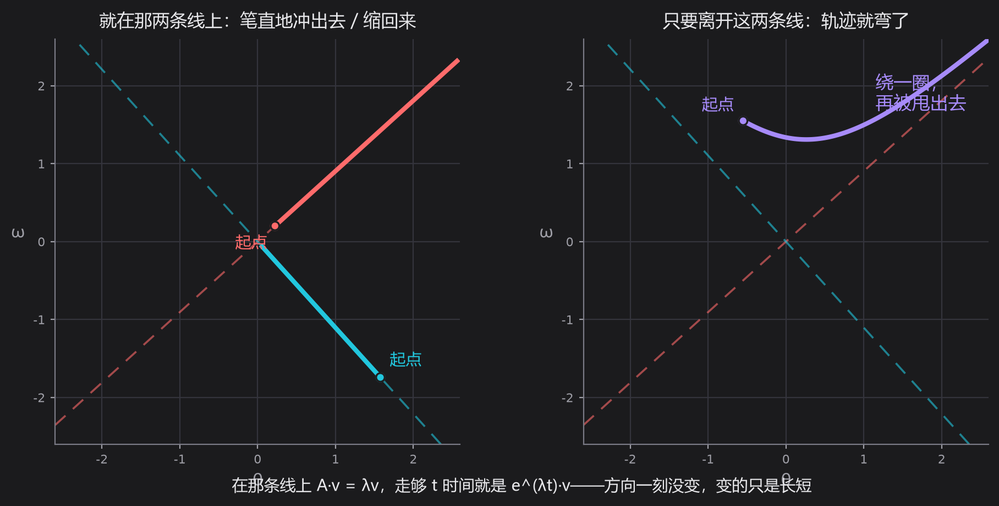
读到这儿，最容易读错的一句话是"站不住"。站不住不是"怎么动都跑掉"——青线上那一捆就自己回来了。站不住的意思是：有一个方向跑掉，而只要有一个方向跑掉，这根棍子迟早会倒；因为真实的一捆数里，多少总掺着一点红线的成分。一个跑、一个回来的那种点，名字叫鞍点——不用记这个名字，记住那个画面就够了。
到这一步可以动手撞那句话了：改参数。棍子换长换短是改 a，加阻尼是改 c。我们把 a 从 −2 扫到 2.5、c 从 0 扫到 3，每一格都重算一遍两个倍数，再把"最大的那个倍数"的正负涂成颜色——正的红、负的青，得到一张地图。
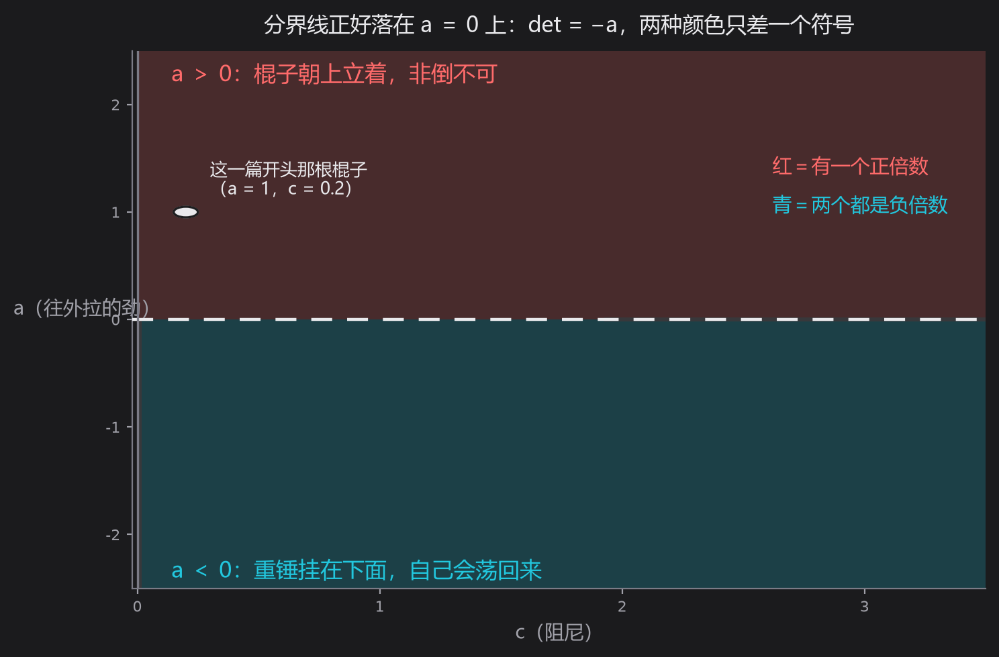
地图上有一条清清楚楚的分界：a ＝ 0。分界上面全红，下面全青。凭什么这么干净？回头看第二行左下角那个 a——它前面没有负号，所以交叉相减得到的是 −a。而交叉相减那个数等于两个倍数乘起来；乘起来是负的，就一定一正一负。再问 a 是什么：a 大于零是棍子朝上立着，a 小于零是重锤挂在下面——那是节拍器那一类东西，它自己会荡回来，也是小学就玩过的另一个玩具。同一根棍子，只差一个符号，稳不稳就换了个个儿；而阻尼这一项（对角线之和 −c）只管两个倍数的大小，管不了它们的正负。
于是再看阻尼这一列。把 c 从 0.2 一路加到 10，等于给棍子泡进越来越稠的糖浆。两个倍数变了吗？变了：正的那个从 0.90 一路掉到 0.099。可它掉到哪儿去了？掉到 0.099——还在横轴上方。
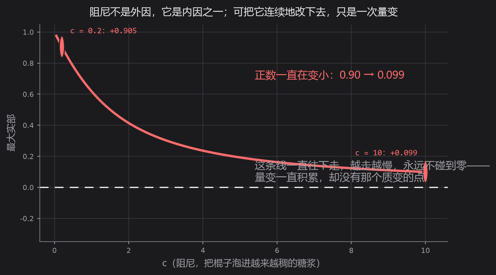
这条线一直往下走，越走越慢，永远不碰到零。阻尼不是外因，它是棍子的内因之一；可是把内因连续地改下去，得到的是一次量变——正数一直在变小，从 0.90 到 0.099。量变要积累到质变，需要一个点：正数变成负数的那一点，而这条曲线上没有这个点。
把 c 一路拉到 3，看正的那个倍数往下掉、却永远不掉过零；再把 a 拖到 0 以下，红青两半当场对调——同一根棍子，只差一个符号，稳不稳换了个个儿。
（这一站是单文件、零依赖，双击就能单独打开。）也可直接打开 这一站。
到这儿，那句话就撞断了。不是"改参数没用"，而是更硬的一句：有的系统，内因怎么改都改不出你想要的那个性质。变化的条件可以随便换，变化的根据说它非倒不可——矛盾就摆在这么直白的地方。
撞断了怎么办？退一步，去看手。一个人立棍子的那三秒钟里到底在做什么？他眼睛盯着棍子，看见它歪了，手就跟着往那边走，让掌心追上棍子的顶端。歪得越厉害，手走得越快；要是还在往那边歪，手就比歪的速度再快一点。这件事他半秒钟里做了几十下，自己完全不知道在做什么数学。
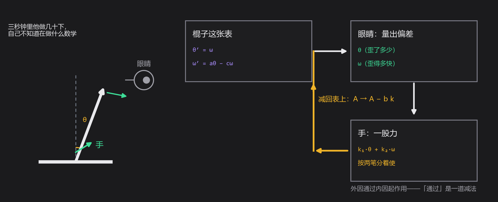
把"手跟着走"写成一条线，就又回到了上一篇的语言。手给的力作用在哪儿？作用在"歪得多快"这一行上。力从哪儿进去是两个数并排的一列，写下来是 b ＝ (0, 1)；手使多大劲，按"歪了多少"分一笔、按"歪得多快"分一笔，各配一个系数，写成一行 k ＝ (k₁, k₂)。这两笔合起来是一股力，力又作用回表上，于是表得改写：
看第二行：左下角原来那个 a 变成了 a−k1，右下角原来那个 −c 变成了 −c−k2。一列乘一行，减在那张表上——就减了这么一下，别的什么也没动。这件事可以说得更重一点：引回来的那条线是外因，而它一接上，就被吃进了那张表里，成了内因的一部分。外因通过内因起作用，在手立棍子这件事上，"通过"是一道减法；这件事工程上叫反馈，名字是后置的，因为话已经说完了。
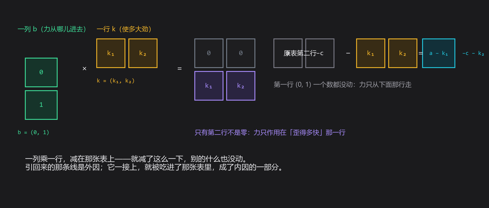
两张表要有个说法区分：原来那张叫开环表（"歪多少、歪多快"只是被报告出去看，没人理它），接线以后的叫闭环表（把它引回来，接成一个圈）。新表的两个倍数是多少？还是那两个命根子：对角线相加是 −c−k2，交叉相减是 k1−a。于是新表的特征方程是
要它两个倍数都是负的，看两个系数就够了：c+k2>0，k1−a>0。
两个数说清了整件事：k₁ 要压过 a——手往那边走的劲得压过棍子往外倒的劲；k₂ 要压过 −c——按速度分的那一笔得压过阻尼。拿 a ＝ 1、c ＝ 0.2 试，取 k ＝ (3, 2.8)，两个倍数是 −1.00 与 −2.00，干净得像刻度。
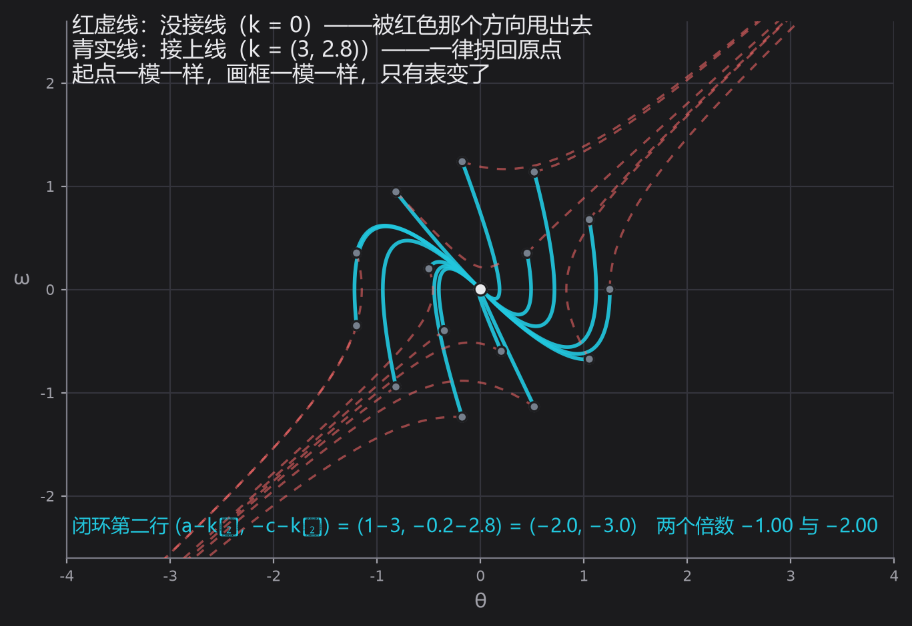
"接线"这件事本身也有意思：k 只要压过那两个数，棍子就稳；压不过，它照样跑。k₁ ＝ a 的时候，两个系数里有一个变成零，两个倍数里就有一个落在 0 上——它既不肯回来也不跑掉，就那么一直歪着。这就是"压得住"与"压不住"之间的那个点，项目里把 k₁ 拖过 a 就能当场看见它变色。
把 k₁ 拖到 a 以下、再拖过 a，看判词当场变色；按「刚好抵消」看压在临界上的那一下，按「搬到 −1 与 −2」看劲使对了以后两个倍数有多干净。
（这一站是单文件、零依赖，双击就能单独打开。）也可直接打开 这一站。
下一件事更狠：能不能不来回试，直接说"我要两个倍数落在哪儿"，然后反解出该用多大力？
能。上一篇第五站说过两个倍数是一元二次方程的两根，而两根由"和"与"积"定住。把上面那个特征方程对着 λ2−sλ+t 一比系数，力就出来了：k1=a+t、k2=−s−c。想要 −1 与 −2？它们的和 s ＝ −3、积 t ＝ 2，于是 k₁ ＝ 1 + 2 ＝ 3、k₂ ＝ 3 − 0.2 ＝ 2.8——和上面一模一样。
还有一条完全不通的路会给出同一个答案：不从系数出发，直接从表本身出发，把想要的方程代进表里算。两条路一条从数出发、一条从表出发，答案分毫不差，这就是互证。项目里把两条算路并排印在读数里，就是为了让人不能只信一条。把倍数搬到想去的地方这件事叫极点配置——名字同样后置。
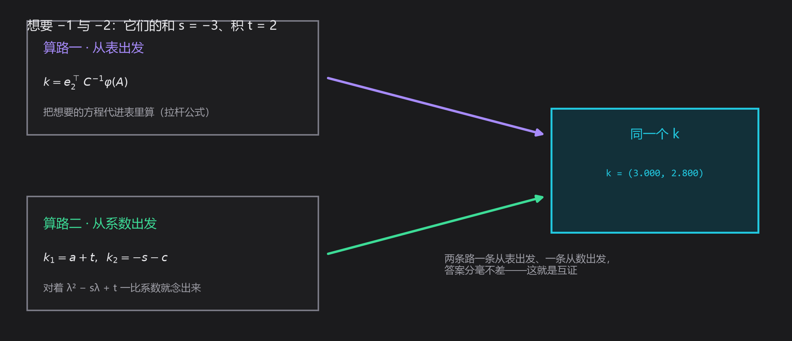
把这个"搬家"画出来，是复平面上的事：两个倍数都是复数，横轴是实部、纵轴是虚部，左半边是"自己回来"的那一半，右半边是"自己跑掉"的那一半。原来那根棍子的两个倍数是 +0.90 和 −1.10，一个在右半边、一个在左半边。你想让它们搬到哪儿，就把它拖到哪儿，项目替你把力的两笔算出来。
拖复平面上的目标圆圈，力替你算出来，两条互不相通的算路并排印在右边；再把其中一只往上拖到不共轭——它会直接告诉你这一对做不到。
（这一站是单文件、零依赖，双击就能单独打开。）也可直接打开 这一站。
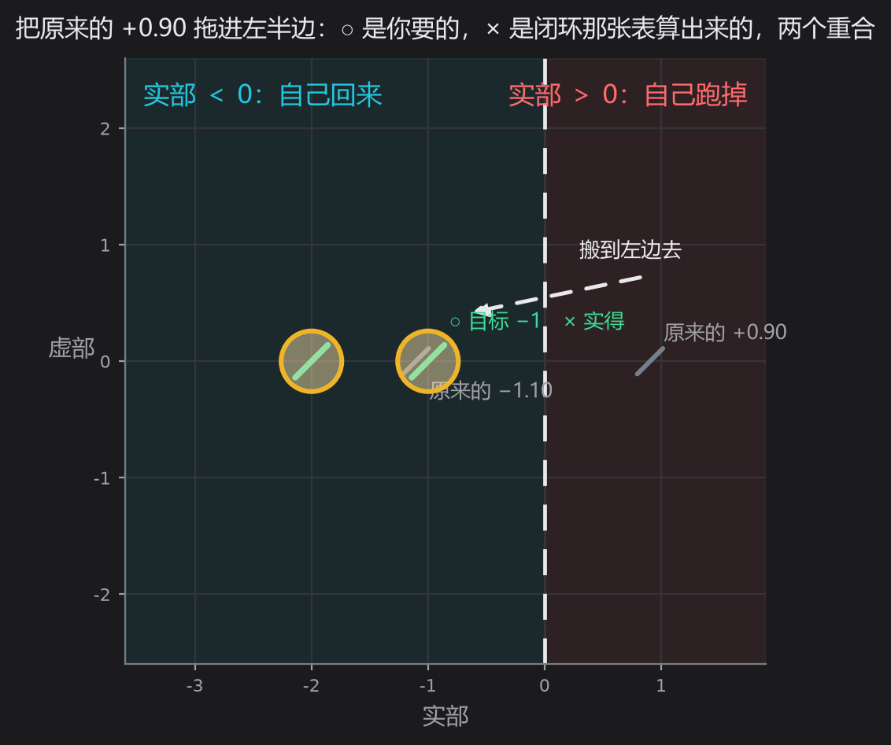
再往回问一句：能不能让它绕两圈再回来？可以。绕圈意味着一对共轭的复倍数 λ1,2=p±qi，而共轭一对的和 p+q 与积 pq 仍然是实数，所以照样只需要一行实数的 k。但有一条边界得说清：复平面上的两个目标不是随便拖的。把上面那个圆往上拖一点、让它们不再共轭，项目会告诉你"这一对做不到"。为什么？看表——这张表的四个数都是实的，它的特征方程的系数就都是实的；而系数是实的方程，两个根要么是一对实数，要么是一对共轭复数。这不是力不够大，是结构上不可能。
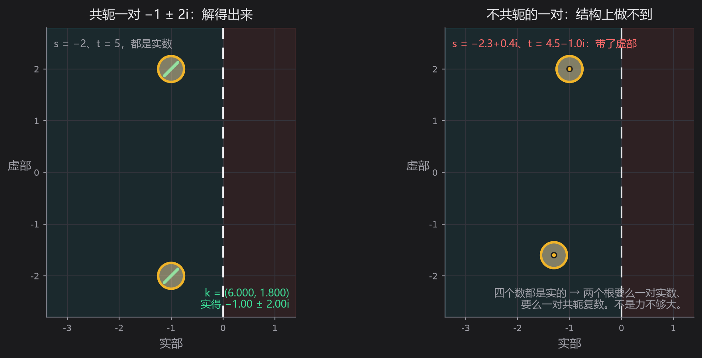
最后一站是这一篇的底。前面每一站都默认一件事：k 想使多大就使多大。可是力从哪儿进去，是有讲究的。
把 b 和"b 被表摁一下之后的去处 Ab"摆在一起，这两支箭头张成一个平行四边形，它的面积算得出来，就是上一篇那个交叉相减：
面积不为零的时候，平面上每个方向都够得着——你说要把倍数搬到哪儿，力就解得出来。面积塌成零呢？
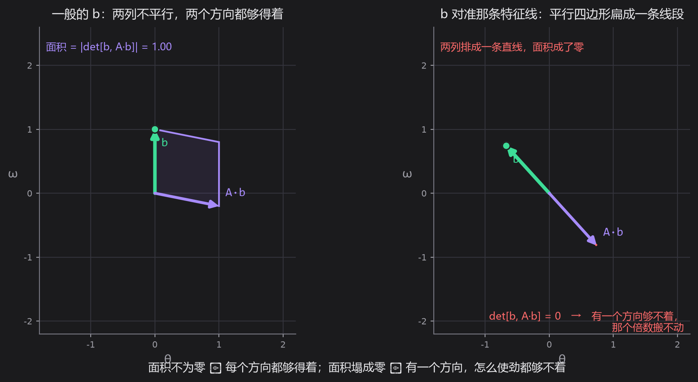
把 b 拖到那条红线或青线上去试试。因为在那条线上 Ab 与 b 同向，两支箭头排成一条直线，平行四边形扁成一条线段，面积成了零，detC=0。这时候你说"我要搬到 −1 和 −2"，项目解不出力来，它返回一个空：有一个方向够不着，那个倍数搬不动。"够得着"就是能控性（名字照例后置），它的判据是"面积不为零"；换个说法是"你试遍了力气也找不到方向"和"面积是不是零"，一句话说的是同一件事的两面。稳定也是这样两种说法：「扰动会不会长大」说的是过程，「两个倍数在不在左半边」说的是判据，两面指同一件事。
但最有意思的地方在这儿：红线和青线各是一处塌缩，后果却完全不一样。
b 落在红线上（那是"自己跑掉"的方向），够不着的那个方向恰好是自己会回来的——使劲够大，另一个倍数照样搬得动，棍子还救得回来。b 落在青线上（那是"自己回来"的方向），够不着的那个方向恰好是那个跑掉的——使劲一百倍、一千倍也没用，它还是 +0.90。同一处退化、同一个面积为零，一个还有救、一个没救，差别只在够不着的那个方向，它自己本来是正的还是负的。
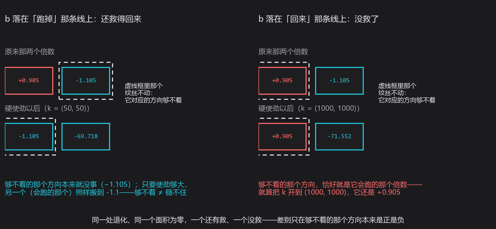
拖 b 的两个分量，或者直接按「对准跑掉那条线／对准回来那条线」：看平行四边形怎么扁成一条线段，再看两处塌缩的判词为什么相反；按「偏一点点」还能看面积从 0 变小时力怎么涨上去。
（这一站是单文件、零依赖，双击就能单独打开。）也可直接打开 这一站。
还有一条边界要说。稍微偏一点点、让两支箭头不再严格排齐，面积就从 0 变成一个小小的正数，立刻又能控了。可代价呢：面积 0.04 的时候，要的力是一百三十几；面积缩到 0.002、小了二十倍，要的力涨到两千七百多——也正好大二十倍，因为 ‖k‖ 与 detC 成反比。面积越接近零，答案越大，"够得着"与"好使唤"是两回事：判据只回答有没有解，不回答解出来多大。越靠近那处塌缩，答案越像对着空谷喊出来的。
到这里该收尾了。上一篇教的动作是"改内因参数"，这一篇把这个动作撞了一下，撞出来三个动作。
第一个还是改内因：改结构、改参数（棍子长短、阻尼）。这一篇证明的是，光有这个不够——有一个正倍数压在那儿，怎么改都压不掉。
第二个是动外因：换一捆数进去。可对一个非倒不可的系统，换一捆数进去只是换了一个倒法。
第三个才是新的：让外因改造内因。引一条线回来，把"歪了多少、歪得多快"变成一行力，这条线一接上，那张表就换了。表是内因，力是外因；外因不是从旁边推了它一把，是把自己写进了内因里。这才是外因通过内因起作用最实的一层意思：不是外因隔着一层去敲内因，而是外因被内因吸收之后，内因就不再是原来那个内因了。
而这条线能不能接上、接上之后能不能把倍数搬到想去的地方，先得问一个更靠前的问题：力从哪儿进去？那就是最后那张平行四边形。它塌下去的时候，无论你怎么使劲，都有一个方向够不着。
带走三问，接着上一篇的三问往下走。上一篇的三问问内因（表是什么、哪些方向变了又没变、面积放大还是摁扁）；这一篇的三问接着往前一步：它接下来是回来还是跑掉？——看两个倍数的正负，一句话就说清了。它跑掉的那个方向，我够得着吗？——看 b 与 Ab 张成的面积塌没塌。够得着的话，我要它落在哪儿？——反解出力，把倍数搬进左半边。三问问完，一个系统的内外因都摸到了，还摸到了它们之间那道减法。
深水区照例挖坑，留给番外篇：两个倍数为什么"加起来是对角线之和、乘起来是交叉相减"（求根公式摆在这儿，证明留到下一篇）；k 里那两个系数到底代表多大的力、和电机的力矩怎么换算——这是从数学走进车间的那一步；n 个状态、m 个输入怎么写（b 变成一列一列的 B，k 变成一行一行的 K，够不够得着要看一整张矩阵的秩）；还有那个"够得着但很费力"的地方，接近塌缩时解出来的力会爆掉，工程上怎么绕开它，那是数值与鲁棒性的正场；以及最要紧的一个坑——这一篇从头到尾用的都是"只歪一点点"时的那张近似表，可棍子真歪到三十度，那四个数就不够用了。非线性是另一篇文章的事，我们迟早要回去找它。
这一篇的图与可交互的部分是配套项目，在本目录的"控制项目"文件夹里，双击即可打开，全部离线。五个视角——站不住的点、内因改不动、把线接回来、把倍数搬家、搬不动的时候——每一站都能改条件、看后果，右侧都写着互证与反例；正文里每一张图，都是从项目的同一套数学里算出来的。读到哪儿手痒，就去把那个滑条拉到那儿：把阻尼推到 10，看那个正数还在不在；把 k₁ 拖到 a 以下，看判词当场变色；把 b 拖到那条特征线上，看平行四边形怎么扁成一条线段。内因终究是变化的根据，而这一篇里，读者自己上手的那几下，就是外因挤进内因的那道缝。